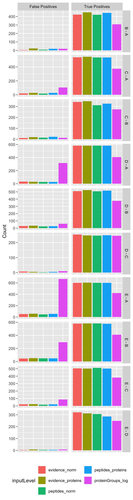
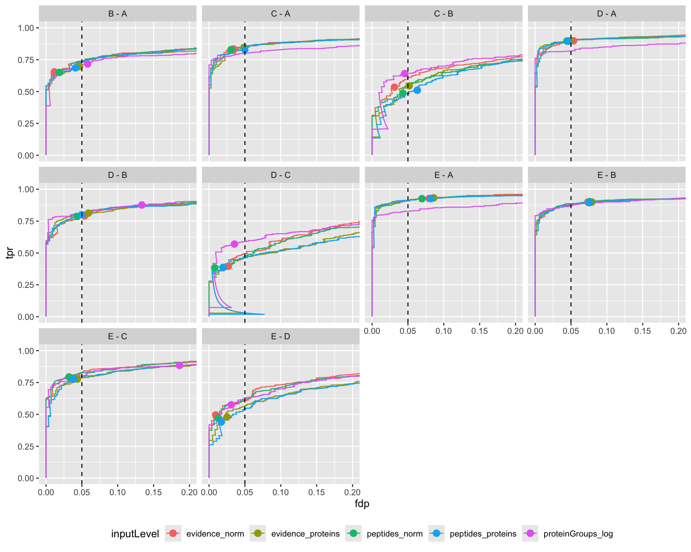
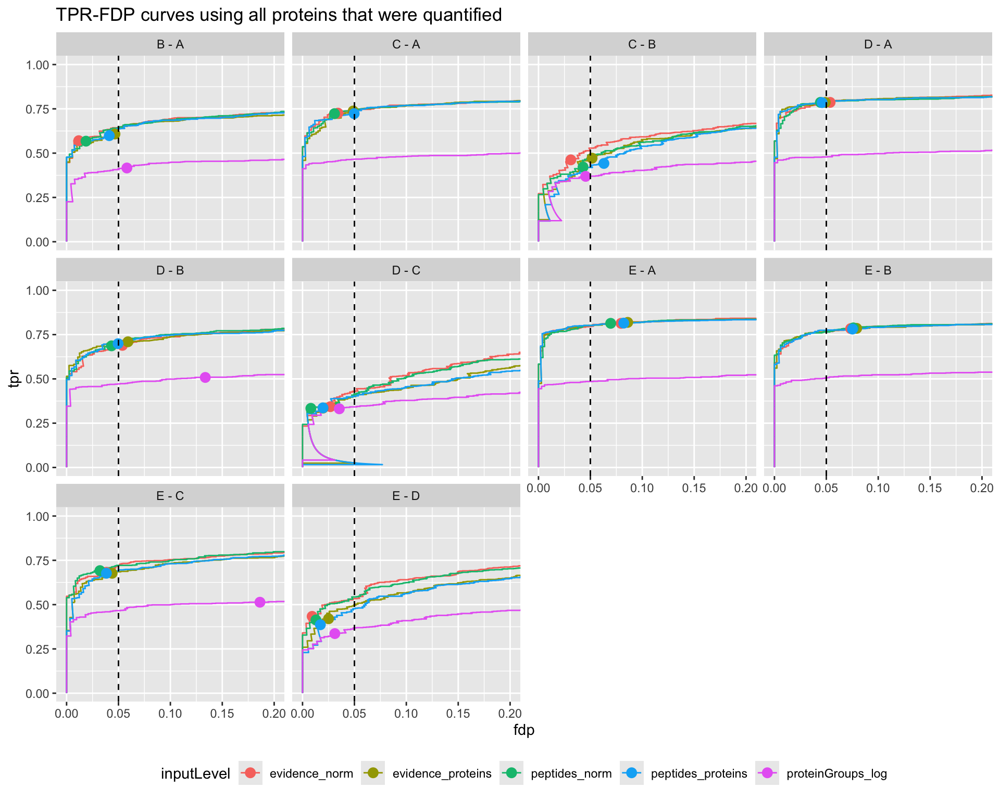
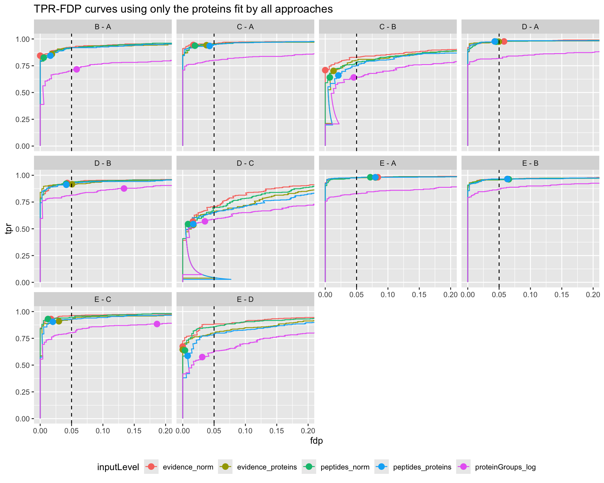
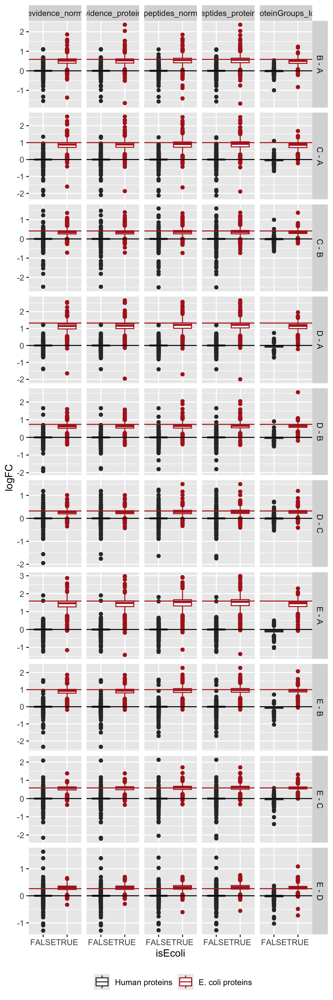
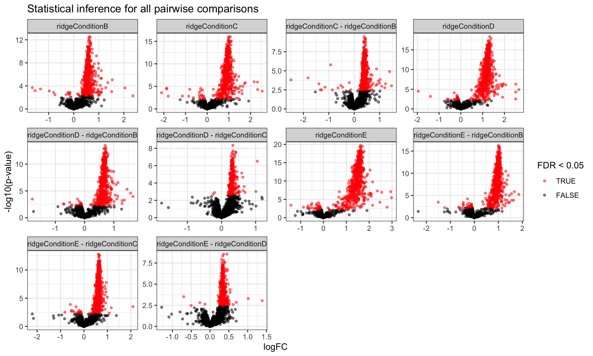
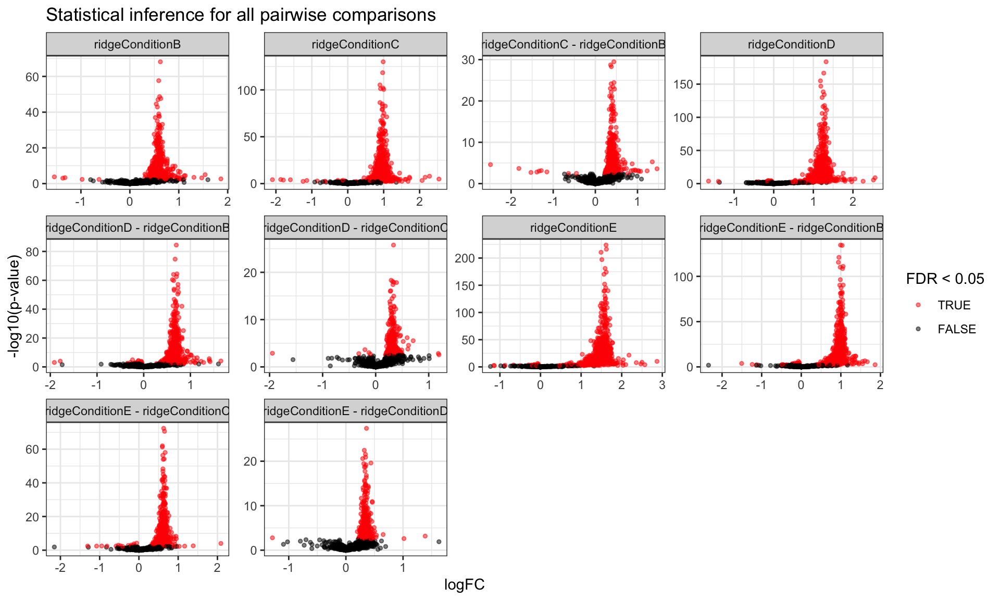

msqrobRefit <- function(object, formula, i, subset, fcol, name,
modelColumnName = "msqrobModels", ...) {
seti <- getWithColData(object, i)
setj <- getWithColData(object, name)
if (any(!subset %in% rowData(seti)[[fcol]]))
stop("Some entries in 'subset' not found in '", fcol,
"' (rowData of set '", i, "')")
setjRefit <- msqrobAggregate(
seti[rowData(seti)[[fcol]] %in% subset, ],
formula = formula, fcol = fcol, modelColumnName = modelColumnName,
...
)
rowData(setj)[[modelColumnName]][subset] <-
rowData(setjRefit)[[modelColumnName]][subset]
modelsNew <- rowData(setj)[[modelColumnName]]
hlp <- limma::squeezeVar(
var = vapply(modelsNew, getVar, numeric(1)),
df = vapply(modelsNew, getDF, numeric(1))
)
for (ii in seq_along(modelsNew)) {
modelsNew[[ii]]@varPosterior <- as.numeric(hlp$var.post[ii])
modelsNew[[ii]]@dfPosterior <- as.numeric(hlp$df.prior + getDF(modelsNew[[ii]]))
}
rowData(object[[name]])[[modelColumnName]] <- modelsNew
object
}3 Benchmarking workflows
3.1 Refit function
Below we define the msqrobRefit function, which we use in this chapter and that will be added to the next release of msqrob2.
In the previous chapters we have seen three different approaches to model the data:
- Approach 1: start from a PSM-level table, compute the protein summaries and model the data at the protein level.
- Approach 2: start from a PSM-level table and model the ion-level data to obtain protein-level results.
- Approach 3: start from a peptide-level table, compute the protein summaries and model the data at the protein level.
There are further possible approaches to model the data:
- Approach 4: start from a peptide-level table and model the peptide-level data to obtain protein-level results.
- Approach 5: start from a protein-level table (generated by MaxQuant using maxLFQ) and model the protein-level data to obtain protein-level results.
In this chapter, we will attempt to understand whether these different approaches lead to difference in modelling performance. To explore these differences, we will conduct a benchmarking experiment using the E. coli spike-in experiment, containing ground truth information that will be used for an objective comparison of the workflows.
Important: the first sections of the chapter are meant for advanced users that are familiar with R scripting since benchmarking requires some degree of automation. However, for novice users interested in the key messages of the benchmarking and that want to implement the best practices, we refer to the take home message section for more accessible guidelines.
3.2 Load packages
We load the msqrob2 package, along with additional packages for data manipulation and visualisation.
suppressPackageStartupMessages({
library("msqrob2")
library("dplyr")
library("tidyr")
library("data.table")
library("ggplot2")
library("patchwork")
})We also configure the parallelisation framework.
library("BiocParallel")
register(SerialParam())3.3 Data
We will reuse the data by (Shen et al. 2018) as in Chapter 1. The data were reanalysed using MaxQuant, which generates results at three levels: the evidence file containing the PSM table, the peptides file, and the protein group file.
3.3.1 Data files
We here retrieve those three data files.
library("BiocFileCache")Loading required package: dbplyr
Attaching package: 'dbplyr'The following objects are masked from 'package:dplyr':
ident, sqlbfc <- BiocFileCache()
evidenceFile <- bfcrpath(bfc, "https://github.com/statOmics/msqrob2data/raw/refs/heads/main/dda/shen/evidence.zip")
peptideFile <- bfcrpath(bfc, "https://github.com/statOmics/msqrob2data/raw/refs/heads/main/dda/shen/peptides.txt")
proteinGroupsFile <- bfcrpath(bfc,"https://github.com/statOmics/msqrob2data/raw/refs/heads/main/dda/shen/proteinGroups.txt")The data consists of a spike-in experiment with E. coli lysates spiked at five different concentrations (3%, 4.5%, 6%, 7.5% and 9% wt/wt) in a trypsin-digested human background.
concentrations <- (2:6) * 1.5
names(concentrations) <- LETTERS[1:5]
concentrations A B C D E
3.0 4.5 6.0 7.5 9.0 In this example, the annotations are extracted from the sample names, although reporting a detailed design of experiments in a table is seen as better practice (Gatto et al. 2023). Since the evidence, peptides and protein-groups tables all contain the same samples, the annotation table will be shared across the MaxQuant data tables.
- Load the evidence table.
evidence <- fread(evidenceFile, check.names = TRUE, integer64 = "double")The evidence file is a long table. Information on the raw files is stored in column Raw.file
rawfiles <- unique(evidence$Raw.file)
rawfiles [1] "B03_03_150304_human_ecoli_C_3ul_3um_column_95_HCD_OT_2hrs_30B_9B"
[2] "B03_08_150304_human_ecoli_C_3ul_3um_column_95_HCD_OT_2hrs_30B_9B"
[3] "B03_18_150304_human_ecoli_C_3ul_3um_column_95_HCD_OT_2hrs_30B_9B"
[4] "B03_19_150304_human_ecoli_B_3ul_3um_column_95_HCD_OT_2hrs_30B_9B"
[5] "B03_07_150304_human_ecoli_D_3ul_3um_column_95_HCD_OT_2hrs_30B_9B"
[6] "B03_14_150304_human_ecoli_D_3ul_3um_column_95_HCD_OT_2hrs_30B_9B"
[7] "B03_15_150304_human_ecoli_E_3ul_3um_column_95_HCD_OT_2hrs_30B_9B"
[8] "B03_21_150304_human_ecoli_A_3ul_3um_column_95_HCD_OT_2hrs_30B_9B"
[9] "B03_05_150304_human_ecoli_E_3ul_3um_column_95_HCD_OT_2hrs_30B_9B"
[10] "B03_09_150304_human_ecoli_B_3ul_3um_column_95_HCD_OT_2hrs_30B_9B"
[11] "B03_10_150304_human_ecoli_A_3ul_3um_column_95_HCD_OT_2hrs_30B_9B"
[12] "B03_11_150304_human_ecoli_A_3ul_3um_column_95_HCD_OT_2hrs_30B_9B"
[13] "B03_12_150304_human_ecoli_B_3ul_3um_column_95_HCD_OT_2hrs_30B_9B"
[14] "B03_13_150304_human_ecoli_C_3ul_3um_column_95_HCD_OT_2hrs_30B_9B"
[15] "B03_16_150304_human_ecoli_E_3ul_3um_column_95_HCD_OT_2hrs_30B_9B"
[16] "B03_17_150304_human_ecoli_D_3ul_3um_column_95_HCD_OT_2hrs_30B_9B"
[17] "B03_20_150304_human_ecoli_A_3ul_3um_column_95_HCD_OT_2hrs_30B_9B"
[18] "B03_02_150304_human_ecoli_B_3ul_3um_column_95_HCD_OT_2hrs_30B_9B"
[19] "B03_04_150304_human_ecoli_D_3ul_3um_column_95_HCD_OT_2hrs_30B_9B"
[20] "B03_06_150304_human_ecoli_E_3ul_3um_column_95_HCD_OT_2hrs_30B_9B"With QFeatures we can read data in long tables, but the annotation file than needs to have a column named runCol. Information on the spikein condition is indicated with a letter, A - E, which is on position 27 in the file name. The acquisition was don in an end-over-end and alternating manner: A1, B1, C1, D1, E1, E2, D2, C2, B2, A2, … This can be seen if we sort the raw files alphabetically. Positions 5 and 6 in the file name seem to indicate the acquisition order.
(
rawfiles <- sort(rawfiles)
) [1] "B03_02_150304_human_ecoli_B_3ul_3um_column_95_HCD_OT_2hrs_30B_9B"
[2] "B03_03_150304_human_ecoli_C_3ul_3um_column_95_HCD_OT_2hrs_30B_9B"
[3] "B03_04_150304_human_ecoli_D_3ul_3um_column_95_HCD_OT_2hrs_30B_9B"
[4] "B03_05_150304_human_ecoli_E_3ul_3um_column_95_HCD_OT_2hrs_30B_9B"
[5] "B03_06_150304_human_ecoli_E_3ul_3um_column_95_HCD_OT_2hrs_30B_9B"
[6] "B03_07_150304_human_ecoli_D_3ul_3um_column_95_HCD_OT_2hrs_30B_9B"
[7] "B03_08_150304_human_ecoli_C_3ul_3um_column_95_HCD_OT_2hrs_30B_9B"
[8] "B03_09_150304_human_ecoli_B_3ul_3um_column_95_HCD_OT_2hrs_30B_9B"
[9] "B03_10_150304_human_ecoli_A_3ul_3um_column_95_HCD_OT_2hrs_30B_9B"
[10] "B03_11_150304_human_ecoli_A_3ul_3um_column_95_HCD_OT_2hrs_30B_9B"
[11] "B03_12_150304_human_ecoli_B_3ul_3um_column_95_HCD_OT_2hrs_30B_9B"
[12] "B03_13_150304_human_ecoli_C_3ul_3um_column_95_HCD_OT_2hrs_30B_9B"
[13] "B03_14_150304_human_ecoli_D_3ul_3um_column_95_HCD_OT_2hrs_30B_9B"
[14] "B03_15_150304_human_ecoli_E_3ul_3um_column_95_HCD_OT_2hrs_30B_9B"
[15] "B03_16_150304_human_ecoli_E_3ul_3um_column_95_HCD_OT_2hrs_30B_9B"
[16] "B03_17_150304_human_ecoli_D_3ul_3um_column_95_HCD_OT_2hrs_30B_9B"
[17] "B03_18_150304_human_ecoli_C_3ul_3um_column_95_HCD_OT_2hrs_30B_9B"
[18] "B03_19_150304_human_ecoli_B_3ul_3um_column_95_HCD_OT_2hrs_30B_9B"
[19] "B03_20_150304_human_ecoli_A_3ul_3um_column_95_HCD_OT_2hrs_30B_9B"
[20] "B03_21_150304_human_ecoli_A_3ul_3um_column_95_HCD_OT_2hrs_30B_9B"Apparently sample A1 has been rerun.
(
rawfiles <- rawfiles[c(20,1:19)]
) [1] "B03_21_150304_human_ecoli_A_3ul_3um_column_95_HCD_OT_2hrs_30B_9B"
[2] "B03_02_150304_human_ecoli_B_3ul_3um_column_95_HCD_OT_2hrs_30B_9B"
[3] "B03_03_150304_human_ecoli_C_3ul_3um_column_95_HCD_OT_2hrs_30B_9B"
[4] "B03_04_150304_human_ecoli_D_3ul_3um_column_95_HCD_OT_2hrs_30B_9B"
[5] "B03_05_150304_human_ecoli_E_3ul_3um_column_95_HCD_OT_2hrs_30B_9B"
[6] "B03_06_150304_human_ecoli_E_3ul_3um_column_95_HCD_OT_2hrs_30B_9B"
[7] "B03_07_150304_human_ecoli_D_3ul_3um_column_95_HCD_OT_2hrs_30B_9B"
[8] "B03_08_150304_human_ecoli_C_3ul_3um_column_95_HCD_OT_2hrs_30B_9B"
[9] "B03_09_150304_human_ecoli_B_3ul_3um_column_95_HCD_OT_2hrs_30B_9B"
[10] "B03_10_150304_human_ecoli_A_3ul_3um_column_95_HCD_OT_2hrs_30B_9B"
[11] "B03_11_150304_human_ecoli_A_3ul_3um_column_95_HCD_OT_2hrs_30B_9B"
[12] "B03_12_150304_human_ecoli_B_3ul_3um_column_95_HCD_OT_2hrs_30B_9B"
[13] "B03_13_150304_human_ecoli_C_3ul_3um_column_95_HCD_OT_2hrs_30B_9B"
[14] "B03_14_150304_human_ecoli_D_3ul_3um_column_95_HCD_OT_2hrs_30B_9B"
[15] "B03_15_150304_human_ecoli_E_3ul_3um_column_95_HCD_OT_2hrs_30B_9B"
[16] "B03_16_150304_human_ecoli_E_3ul_3um_column_95_HCD_OT_2hrs_30B_9B"
[17] "B03_17_150304_human_ecoli_D_3ul_3um_column_95_HCD_OT_2hrs_30B_9B"
[18] "B03_18_150304_human_ecoli_C_3ul_3um_column_95_HCD_OT_2hrs_30B_9B"
[19] "B03_19_150304_human_ecoli_B_3ul_3um_column_95_HCD_OT_2hrs_30B_9B"
[20] "B03_20_150304_human_ecoli_A_3ul_3um_column_95_HCD_OT_2hrs_30B_9B"(
coldata <- data.frame(runCol = rawfiles) |>
mutate(Condition = substr(runCol,27,27),
Concentration = concentrations[Condition],
Sample = paste0(
rep(letters[c(1:5,5:1)],2),
rep(1:4, each = 5))
)
) runCol Condition
1 B03_21_150304_human_ecoli_A_3ul_3um_column_95_HCD_OT_2hrs_30B_9B A
2 B03_02_150304_human_ecoli_B_3ul_3um_column_95_HCD_OT_2hrs_30B_9B B
3 B03_03_150304_human_ecoli_C_3ul_3um_column_95_HCD_OT_2hrs_30B_9B C
4 B03_04_150304_human_ecoli_D_3ul_3um_column_95_HCD_OT_2hrs_30B_9B D
5 B03_05_150304_human_ecoli_E_3ul_3um_column_95_HCD_OT_2hrs_30B_9B E
6 B03_06_150304_human_ecoli_E_3ul_3um_column_95_HCD_OT_2hrs_30B_9B E
7 B03_07_150304_human_ecoli_D_3ul_3um_column_95_HCD_OT_2hrs_30B_9B D
8 B03_08_150304_human_ecoli_C_3ul_3um_column_95_HCD_OT_2hrs_30B_9B C
9 B03_09_150304_human_ecoli_B_3ul_3um_column_95_HCD_OT_2hrs_30B_9B B
10 B03_10_150304_human_ecoli_A_3ul_3um_column_95_HCD_OT_2hrs_30B_9B A
11 B03_11_150304_human_ecoli_A_3ul_3um_column_95_HCD_OT_2hrs_30B_9B A
12 B03_12_150304_human_ecoli_B_3ul_3um_column_95_HCD_OT_2hrs_30B_9B B
13 B03_13_150304_human_ecoli_C_3ul_3um_column_95_HCD_OT_2hrs_30B_9B C
14 B03_14_150304_human_ecoli_D_3ul_3um_column_95_HCD_OT_2hrs_30B_9B D
15 B03_15_150304_human_ecoli_E_3ul_3um_column_95_HCD_OT_2hrs_30B_9B E
16 B03_16_150304_human_ecoli_E_3ul_3um_column_95_HCD_OT_2hrs_30B_9B E
17 B03_17_150304_human_ecoli_D_3ul_3um_column_95_HCD_OT_2hrs_30B_9B D
18 B03_18_150304_human_ecoli_C_3ul_3um_column_95_HCD_OT_2hrs_30B_9B C
19 B03_19_150304_human_ecoli_B_3ul_3um_column_95_HCD_OT_2hrs_30B_9B B
20 B03_20_150304_human_ecoli_A_3ul_3um_column_95_HCD_OT_2hrs_30B_9B A
Concentration Sample
1 3.0 a1
2 4.5 b1
3 6.0 c1
4 7.5 d1
5 9.0 e1
6 9.0 e2
7 7.5 d2
8 6.0 c2
9 4.5 b2
10 3.0 a2
11 3.0 a3
12 4.5 b3
13 6.0 c3
14 7.5 d3
15 9.0 e3
16 9.0 e4
17 7.5 d4
18 6.0 c4
19 4.5 b4
20 3.0 a4We retrieve all the E. coli protein identifiers to later identify which proteins are known to be differentially abundant (E. coli proteins) or constant (human) across condition.
ecoli <- bfcrpath(bfc, "https://github.com/statOmics/msqrob2data/raw/refs/heads/main/dda/shen/ecoli_up000000625_7_06_2018.fasta")
ecoli <- readLines(ecoli)
ecoli <- ecoli[grepl("^>", ecoli)]
ecoli <- gsub(">sp\\|(.*)\\|.*", "\\1", ecoli)3.3.2 Convert to QFeatures
We combine each MaxQuant file with the annotation table into a QFeatures object.
evidence <- readQFeatures(
evidence,
colData = coldata,
runCol = "Raw.file",
quantCols = "Intensity")Checking arguments.Loading data as a 'SummarizedExperiment' object.Splitting data in runs.Formatting sample annotations (colData).Formatting data as a 'QFeatures' object.- Convert the peptide table.
peptides <- data.table::fread(peptideFile, check.names = TRUE, integer64 = "double")
coldata$quantCols <- paste0("Intensity.", coldata$Sample)
peptides <- readQFeatures(
peptides, colData = coldata, name = "peptides",
fnames = "Sequence"
)Checking arguments.Loading data as a 'SummarizedExperiment' object.Formatting sample annotations (colData).Formatting data as a 'QFeatures' object.Setting assay rownames.- Load and convert the protein-groups table. The MaxQuant preprocessed and normalised data are stored in the columns that start with “LFQ.intensity.” So, we adjust the quantCols accordingly.
proteinGroups <- data.table::fread(
proteinGroupsFile,
check.names = TRUE,
integer64 = "double")
coldata$quantCols <- paste0("LFQ.intensity.", coldata$Sample)
proteinGroups <- readQFeatures(
proteinGroups,
colData = coldata,
name = "proteinGroups",
fnames = "Protein.IDs"
)Checking arguments.Loading data as a 'SummarizedExperiment' object.Formatting sample annotations (colData).Formatting data as a 'QFeatures' object.Setting assay rownames.3.4 Data preprocessing
To exclude differences in data processing between the different data files, we will create a common data processing workflow in a dedicated function1.
3.4.1 Preprocessing workflow
We will use the same QFeatures data preprocessing workflow as presented in the basic concepts chapter starting from the peptides table. However, we will account for the increased complexity in filtering when starting from PSM-level tables, where we need to exclude PSM mapping to multiple ions (as explained in the advanced concepts chapter). Conversely, the protein group table (containing LFQ normalised data) already underwent several data processing steps that will be ignored. We also need to provide the correct protein identifiers across data levels. We will use the Proteins column for the PSM-level and the peptide-level data, while we will use the Protein.IDs for the protein-group-level data.
Here is an overview of the data processing workflow:
- Encode missing values with
NA - Perform log2-transformation
- (Only for PSM-level data) Remove duplicated PSMs for each ion and join the data from different runs, effectively leading to ion-level data.
- (Only for protein-level data) Rename
Protein.IDstoProteinfor consistent protein identifier column name. - Filter features by removing failed protein inference and removing decoys and contaminants.
- Filter missing values, keeping features that are observed in at least 4 samples. This is the last step for the workflow starting from protein group data, because maxLFQ values are already normalised and summarised to protein values.
- Perform normalisation.
- Perform summarisation. The summarised values will only be used for protein-level modelling while the normalised data prior to normalisation will be used for ion-level and peptide-level modelling.
The workflow is implemented in a functions with one argument, object, which is the QFeatures we generated, either from the evidence file, the peptides file or the protein-groups file.
preprocessing_workflow <- function(object) {
## 1. Encode missing values
i <- names(object) ## store the input set names
object <- zeroIsNA(object, i)
## 2. Log transformation
logName <- paste0(i, "_log") ## generate the log set names
object <- logTransform(object, i, name = logName, base = 2)
## 3. PSM filtering (only for psm-level data)
if (length(i) > 1) {
for (ii in logName) {
rowdata <- rowData(object[[ii]])
rowdata$ionID <- paste0(rowdata$Sequence, rowdata$Charge)
rowdata$rowSums <- rowSums(assay(object[[ii]]), na.rm = TRUE)
rowdata <- data.frame(rowdata) |>
group_by(ionID) |>
mutate(psmRank = rank(-rowSums))
rowData(object[[ii]]) <- DataFrame(rowdata)
}
object <- filterFeatures(object, ~ psmRank == 1, keep = TRUE)
i <- "evidence"
joinName <- paste0(i, "_log")
object <- joinAssays(object, logName, joinName, "ionID")
logName <- joinName
}
## 4. Match protein identifiers across data levels
if (i == "proteinGroups") {
## We need to match the protein IDs in the evidence/peptide
## table with the protiein IDs in the protein group table
rowdata <- rbindRowData(object, names(object))
rowdata$Proteins <- rowdata$Protein.IDs
rowData(object) <- split(rowdata, rowdata$assay)
}
## 5. Feature filtering
object <- filterFeatures(
object, ~ Proteins != "" & ## Remove failed protein inference
!grepl(";", Proteins) & ## Remove protein groups
Reverse != "+" & ## Remove decoys
(Potential.contaminant != "+") ## Remove contaminants
)
## 6. Missing value filtering
n <- ncol(object[[logName]])
object <- filterNA(object, i = logName, pNA = (n - 4) / n)
## (The steps below are not for protein-group data)
if (i == "proteinGroups") return(object)
## 7. Normalisation
normName <- paste0(i, "_norm")
nfLog <- nfLogMedianOfRatios(object, logName)
object <- sweep(
object, MARGIN = 2, STATS = nfLog, i = logName, name = normName
)
## 8. Summarisation
summName <- paste0(i, "_proteins")
aggregateFeatures(
object, i = normName, name = summName, fcol = "Proteins",
fun = MsCoreUtils::robustSummary
)
}3.4.2 Run the workflow
Now that we have defined a common data processing function, we apply to each input data level: the ion data, the peptide data and the protein-group data. We then combine all the data in a single QFeatures object.
evidence <- preprocessing_workflow(evidence)
peptides <- preprocessing_workflow(peptides)
proteinGroups <- preprocessing_workflow(proteinGroups)
spikein <- c(evidence, peptides, proteinGroups)3.5 Data analysis workflows
Similarly to the data processing, we will use the same modelling workflow for each data level. For ion-level data (starting from the evidence file) and peptide-level data, we will both model the data before and after summarisation. In other words, we will model the data at the ion/peptide level (as described in the advanced chapter) and at the protein level (as described in the basics chapter).
3.5.1 Model definition
Depending on the input level (ion, peptide or protein), different models are required. The simplest model is the protein model where we account for the effect of Condition (spike-in amount group) using a fixed effect. For the peptide and the ion models, the data contains multiple peptides per proteins, and we expect that intensities from the same peptide are more similar than intensities from different peptides. Similarly, modelling multiple peptides per protein implies that we have multiple intensities per sample and hence that intensities from the same sample are more similar that intensities from different samples. The ion and peptide models therefore include a random effect for ion (ionID) and peptide (Sequence), and a random effect for sample (Sample). All three model definitions are stored in a list to streamline later access.
models <- list(
protein = ~ Condition,
peptide = ~ Condition + (1 | Sample) + (1 | Sequence),
ion = ~ Condition + (1 | Sample) + (1 | ionID)
)We will benchmark the performance of the modelling approaches by comparing all possible combination of 2 spike-in conditions2. All models assess the same comparisons of conditions, hence the same contrasts. We therefore build a contrast matrix that is shared across all models.
allContrasts <- createPairwiseContrasts(
models$protein, colData(spikein), var = "Condition", ridge = TRUE
)Warning: the 'nobars' function has moved to the reformulas package. Please update your imports, or ask an upstream package maintainter to do so.
This warning is displayed once per session.L <- makeContrast(
allContrasts,
c("ridgeConditionB", "ridgeConditionC", "ridgeConditionD", "ridgeConditionE")
)3.5.2 Data modelling workflow
We will use the same msqrob2 data modelling and statistical inference workflow as presented in the basic concepts chapter. However, for ion-level and peptide-level models, we will rely on mixed models that have been introduced in the advanced chapter, including the refitting of proteins for which there is only 1 feature (ion or peptide). We implement the workflow in a function that we will call for all modelling approaches. It has 5 arguments:
objectis the preprocessedQFeaturesobject containing the data to model.iis the name of the set to start (seenames(spikein)).modelis a formula defining the model to estimate.Lis the contrast matrix to perform hypothesis testing.modelLevelindicates whether the model should be fit at the"ion","peptide"or"protein"level.
modelling_workflow <- function(object, i, model, L, modelLevel) {
## 1. Estimate the model
if (modelLevel == "protein") {
object <- msqrob(
object, i = i, formula = model,
ridge = TRUE,
robust = TRUE
)
} else {
## 1a. Estimate
object <- msqrobAggregate(
object, i = i, formula = model,
fcol = "Proteins", name = "msqrob",
ridge = TRUE,
robust = TRUE
)
i <- "msqrob"
## 1b. Refit one-hit-wonders
counts <- aggcounts(object[["msqrob"]])
oneHitProteins <- rownames(counts)[rowMax(counts) == 1]
object <- msqrobRefit(
object, i = i, subset = oneHitProteins,
formula = ~ Condition,
fcol = "Proteins", name = "msqrob",
robust = TRUE, ridge = TRUE
)
}
## 2. Hypothesis testing
object <- hypothesisTest(object, i, contrast = L)
## 3. Collect the results
out <- msqrobCollect(object[[i]], L, combine = TRUE)
out
}3.5.3 Run the workflow
We will now run the above function for the different approaches. To do so, we create a table containing the main modelling settings3:
- Approach 1 (called
evidence_proteins): model the data from the evidence file using the protein level data. - Approach 2 (called
evidence_norm): model the data from the evidence file using the normalised ion data - Approach 3 (called
peptides_proteins): model the data from the peptides file using the protein level data. - Approach 4 (called
peptides_norm): model the data from the peptides file using the normalised peptide data. - Approach 5 (called
proteinGroups_log): model the data from the protein groups file using the protein level data.
(approaches <- data.frame(
inputLevel = c("evidence_proteins", "evidence_norm", "peptides_proteins", "peptides_norm", "proteinGroups_log"),
modelLevel = c("protein", "ion", "protein", "peptide", "protein")
)) inputLevel modelLevel
1 evidence_proteins protein
2 evidence_norm ion
3 peptides_proteins protein
4 peptides_norm peptide
5 proteinGroups_log proteinFor each row of this table, we retrieve the different arguments and run our data modelling workflow. Notice how every approach is run using the same code. Every apply iteration returns a table of statistical inference results for all pairwise comparisons. We combine all the tables in a single table for result exploration.
results <- apply(approaches, 1, function(x) {
out <- modelling_workflow(
spikein, i = x[["inputLevel"]], model = models[[x[["modelLevel"]]]],
L = L, modelLevel = x[["modelLevel"]]
)
out$inputLevel <- x[["inputLevel"]]
out$modelLevel <- x[["modelLevel"]]
out
})
results <- do.call(rbind, results)We also add whether each modelled protein is a E. Coli protein (known to be differentially abundant) or not. We also simplify the naming of the contrasts for visualisation.
results$isEcoli <- results$feature %in% ecoli
results$contrast <- gsub("ridgeCondition", "", results$contrast)
results$contrast <- gsub("^([B-E])$", "\\1 - A", results$contrast)3.6 Performance benchmark
We now can compare the performance of the different modelling approaches. We will compare the approaches based on 4 objectives criteria:
- The number of fitted proteins across conditions.
- The number of true positives and false positives at a 5% FDR threshold.
- The sensitivity against the rate of missidentification.
- The accuracy and pricision of the log2-fold change estimatione
3.6.1 Number of fits
We compare the number of proteins that could be estimated by each approach, where a model that fits more proteins is preferred. Note that the number of fits exceeds the number of measured proteins because we summed the fits over all comparisons.
group_by(results, inputLevel) |>
summarise(n = sum(!is.na(adjPval))) |>
ggplot() +
aes(x = inputLevel, y = n, fill = inputLevel) +
geom_bar(stat = "identity")
We can see that the approaches that fits least proteins is when starting from the protein-group file. However, all other four approaches can fit the same number of proteins.
3.6.2 TP and FP at 5% FDR
An approach that fits more proteins is preferred, provided that the additional fits lead to meaningful results. Because this data set contains ground truth information, we can assess whether the modelling approaches correctly prioritised the proteins given the known differential abundant proteins. We therefore benchmark the approaches by examining the number of reported proteins that are true positive (TP) (i.e., E. Coli proteins), and false positive (FP) (i.e., human proteins) considering a 5% false discovery rate (FDR) threshold, which is typically used.
We first construct the table with TPs and FPs obtained from each data analysis workflow approach for each comparison.
tpFpTable <- group_by(results, inputLevel, contrast) |>
filter(adjPval < 0.05) |>
summarise("True Positives" = sum(isEcoli),
"False Positives" = sum(!isEcoli)) |>
pivot_longer(cols = c("True Positives", "False Positives"))`summarise()` has regrouped the output.
ℹ Summaries were computed grouped by inputLevel and contrast.
ℹ Output is grouped by inputLevel.
ℹ Use `summarise(.groups = "drop_last")` to silence this message.
ℹ Use `summarise(.by = c(inputLevel, contrast))` for per-operation grouping
(`?dplyr::dplyr_by`) instead.We then plot the table as a bar plot, facetting for every comparison.
ggplot(tpFpTable) +
aes(x = inputLevel,
y = value,
fill = inputLevel) +
geom_bar(stat = "identity") +
facet_grid(contrast ~ name, scales = "free") +
labs(x = "", y = "Count") +
theme(axis.text.x = element_blank(),
axis.ticks.x = element_blank(),
legend.position = "bottom") +
guides(fill = guide_legend(nrow = 3))## to avoid legend getting cropped 
The plot clearly shows that starting from MaxQuant’s proteinGroups file leads to a suboptimal performance as the number of TP is systematically lower compared to other approaches, while there are similar or even much more FPs.
The four other approaches lead to comparable results. We could argue that for some specific comparisons (C-B, D-C, E-D) approaches starting from the evidence file recover slightly more TP without impact on the number of FP. Similarly modelling at the peptide/ion level leads to slight increase in performance compared to modelling at the protein level, but these difference are subtle.
3.6.3 TPR-FDP curves
Additionally, we construct true positive rate (TPR)-false discovery proportion (FDP) plots. TPR represents the fraction of truly DA proteins reported by the method, calculated as \(TPR = \frac{TP}{TP+FN}\), with FN false negatives (i.e., E. Coli proteins that were not flagged as differential abundant). FDP denotes the proportion of false positives among all proteins flagged as differential abundant, calculated as \(FDP = \frac{FP}{TP + FP}\).
So we first compute the FDP and TPR using the custom functions below:
computeFDP <- function(pval, tp) {
ord <- order(pval)
fdp <- cumsum(!tp[ord]) / 1:length(tp)
fdp[order(ord)]
}
computeTPR <- function(pval, tp, nTP = NULL) {
if (is.null(nTP)) nTP <- sum(tp)
ord <- order(pval)
tpr <- cumsum(tp[ord]) / nTP
tpr[order(ord)]
}Before computing these metrics, we first remove any failed inference4. This means that we are comparing the approach based on a set of proteins that is specific to each approach.
We compute the TPR and FDP for each approach (given by inputLevel) and each pairwise spike-in comparison (given by contrast).
performance <- group_by(results, inputLevel, contrast) |>
na.exclude() |>
mutate(tpr = computeTPR(pval, isEcoli),
fdp = computeFDP(pval, isEcoli)) |>
arrange(fdp)We also highlight the observed FDP at a 5% FDR threshold. Since the FDR represent the expected FDP, i.e. the average of the FDPs obtained when the spike-in experiment were to be repeated an infinite number of times, an observed FDP that is very far away from 5% is indicative for a workflow that provides poor FDR control.
workPoints <- group_by(performance, inputLevel, contrast) |>
filter(adjPval < 0.05) |>
slice_max(adjPval) |>
filter(!duplicated(inputLevel))We can now generate the TPR-FDP curves. The best performing approach is characterised by the largest area under the curve. These curves provide the performance over a range of FDP values, but we limit the plot to the \([0, 0.2]\) range because researchers are rarely interest in the performance when the FDP exceeds 20%.
ggplot(performance) +
aes(y = fdp,
x = tpr,
colour = inputLevel) +
geom_line() +
geom_point(data = workPoints, size = 3) +
geom_hline(yintercept = 0.05, linetype = 2) +
facet_wrap(~ contrast) +
coord_flip(ylim = c(0, 0.2)) +
theme(legend.position = "bottom")
The plots show that the msqrob2 workflows starting from the evidence and peptide file perform similarly. However, workflows starting from the proteinGroups file seem to performe worse for some comparisons and better for others.
This is a bit counter intuitive as we noticed a lower sensitivity when starting from the protein groups file when considering the number of TPs and FPs that were returned at the nominal 5% FDR level.
Note, that the performance curves above, however, do not provide a fair comparison. The workflows starting from the evidence and peptides file can fit more proteins.
So, for a fair comparison, we also (1) create TPR-FDP plots when considering all proteins considered when starting from either the evidence, peptides or proteinGroups file. Similarly, we also compare the approaches based on (2) a common set of proteins that have been fit by all approaches.
- In the code for the TPR-FDP plot considering all proteins we calculate the TPR based on the union of spikein proteins that were picked with at least one workflow, i.e. we first calculate the total number of true positives (E. coli) proteins that were considered by at least one method. Note that we do not have to remove results with missing inference as these will appear at the end of the TPR-FDP plot. The code acts as if the p-values for these proteins are equal to
nTP <- results |>
filter(isEcoli) |>
pull(feature) |>
unique() |>
length() #1.
performance_all <- group_by(results, inputLevel, contrast) |>
mutate(tpr = computeTPR(pval, isEcoli,nTP = nTP),
fdp = computeFDP(pval, isEcoli)) |>
arrange(fdp)
workPoints <- group_by(performance_all, inputLevel, contrast) |>
filter(adjPval < 0.05) |>
slice_max(adjPval) |>
filter(!duplicated(inputLevel))
ggplot(performance_all) +
aes(y = fdp,
x = tpr,
colour = inputLevel) +
geom_line() +
geom_point(data = workPoints, size = 3) +
geom_hline(yintercept = 0.05, linetype = 2) +
facet_wrap(~ contrast) +
coord_flip(ylim = c(0, 0.2)) +
theme(legend.position = "bottom") +
ggtitle("TPR-FDP curves using all proteins that were quantified")
Note, that this leads to a dramatic decrease in the performance for workflows starting from the protein groups file as way less proteins are considered / fitted. This leads to a much lower sensitivity and is in line with the results we previously observed when concidering the TPs and FPs returned at the 5% FDR-level.
- In the code for the TPR-FDP plot considering the common proteins, we add a filtering step where we require, for each comparison, that results are present for all 5 approaches, effectively focusing on the set of proteins that have been estimated by all approaches.
performance_common <- group_by(results, feature, contrast) |>
filter(!is.na(adjPval)) |>
filter(n() == 5) |> #2
group_by(inputLevel, contrast) |>
mutate(tpr = computeTPR(pval, isEcoli),
fdp = computeFDP(pval, isEcoli)) |>
arrange(fdp)
workPoints <- group_by(performance_common, inputLevel, contrast) |>
filter(adjPval < 0.05) |>
slice_max(adjPval) |>
filter(!duplicated(inputLevel))
ggplot(performance_common) +
aes(y = fdp,
x = tpr,
colour = inputLevel) +
geom_line() +
geom_point(data = workPoints, size = 3) +
geom_hline(yintercept = 0.05, linetype = 2) +
facet_wrap(~ contrast) +
coord_flip(ylim = c(0, 0.2)) +
theme(legend.position = "bottom") +
ggtitle("TPR-FDP curves using only the proteins fit by all approaches")
Interestingly, we again observe a much lower sensitivity for msqrob2 starting from the proteingroups file when only considering the proteins that were fitted by all workflows. Indicating that the difference in performance does not solely has to do with filtering, but also with differences in normalisation and/or summarisation.
We also note that the FDR is often not well controlled when starting from the proteinGroups file.
These results are in line with the previous benchmark results, that also reported that starting from the proteinGroups file often leads to a severe backlash on performance.
Interestingly, workflows starting from the evidence file or the peptides file show comparable performances, although for challenging comparisons where the performance is generally low (C-B, D-C, E-D) we find a subtle increase in performance for ion/peptide level models. Overal, we find that these workflows also lead to a good FDR control. We also find that they tend to be slightly conservative for the D-C and E-D comparisons and slightly too liberal for the E-A and E-B comparison.
3.6.4 Fold change boxplots
Next to correctly prioritising the differentially abundant proteins, another object is to correctly estimate the log2-fold change between conditions. Since every condition contains E. Coli proteins that have been spiked in experimentally controlled amounts, we know the real log2-fold change between any two conditions. We will explore the model accuracy, i.e. how close the estimations are from the true value on average, and the model precision, i.e. how narrow the estimations are spread around the average estimation. In this data set, there are two target values. For E. Coli proteins, the
expected value is the experimentally induced log2-fold change. For human proteins, the expected value is a log2-fold change of 0, as these proteins are experimentally known to be constant.
We explore the results using boxplots of the estimated log2-fold changes, but we first create a small table with the expected values.
realLogFC <- data.frame(
logFC = t(L) %*% lm(log2(Concentration) ~ Condition, colData(spikein))$coef[-1]
)
realLogFC$contrast <- gsub("ridgeCondition","",colnames(L))
realLogFC$contrast <- gsub("^([B-E])$", "\\1 - A", realLogFC$contrast)We can now create the boxplots with the estimated log2-fold changes, adding horizontal lines with the corresponding target values.
ggplot(results) +
aes(y = logFC,
x = isEcoli,
colour = isEcoli) +
geom_boxplot() +
scale_color_manual(
values = c("grey20", "firebrick"), name = "",
labels = c("Human proteins", "E. coli proteins")
) +
facet_grid(contrast ~ inputLevel, scales = "free") +
geom_hline(data = realLogFC, aes(yintercept = logFC),
colour = "firebrick") +
geom_hline(yintercept = 0) +
theme(legend.position = "bottom")Warning: Removed 9987 rows containing non-finite outside the scale range
(`stat_boxplot()`).
For all approaches, the boxplots are roughly centred on the expected value, indicating good model accuracy.
3.7 Take home messages
We found a drop in performance when starting from the protein-group data compared to the other approaches, especially when considering the same proteins (all proteins or the common proteins) suggesting that these workflows can lead to suboptimal results. We did not find strong differences in performance between the remaining approaches. For some comparisons, we found a slight increase in performance when starting from the evidence file compared to starting from the peptides file. Similarly, for some comparisons, we found a slight increase in performance when modelling data at the ion/peptide level compared to the protein level.
Processing the data from the evidence file only leads to one additional step compared to processing the data from the peptides file: we need to find a low-level feature definition that is shared across run, which we here defined as the ion level (i.e. the combination of the peptide sequence and its charge). This additional step has little impact on the complexity of the workflow.
Modelling the data at the ion/peptide level is more advanced than modelling at the protein level, as it requires the inclusion of random effects to account for the correlation structure within and between samples and within and between ions/peptides from the same protein. Moreover, the data modelling is performed at the ion/peptide level, but the statistical inference results are reported at the protein level, hence, no direct protein summaries are available to explore and support the statistical outcome5. Therefore, we leave it to the user to decide whether the slight improvement in performance is worth the cost of a more complex statistical analysis (Sticker et al. 2020).
Note, that in this benchmark, we also use ridge regression (ridge = TRUE) as opposed to the Introductory chapter to msqrob2. Ridge regression
works generally well for designs with one factor with multiple conditions. For this particular study, it provide much better FDR control. However, it increases the computational complexity considerably. For more complex designs with multiple factors ridge regression might be suboptimal because the optimal penalty might differ between factors (and blocking variables). Moreover, it does not work for simple two-groups designs or designs with only one continuous predictor. So by default ridge = FALSE in the msqrob function.
In summary, this chapter showed how to perform benchmarking on different types of data input. Note, that the same framework could be used to compare different search and quantification engines. Similarly, this framework can also be applied to compare different instruments or analytical protocols and setups. In the next chapter we demonstrate how to compare the impact of analysis steps for the same data.
In the remainder of this chapter, we provide a recap on how to perform a proteomics analysis from the evidence file6, either at the ion-level or at the protein level.
3.7.1 Preprocessing the evidence file
The first step is to read the data. Remember that we need two pieces of data, the sample annotation table and, in this case, the PSM table obtained after reading MaxQuant’s evidence file.
Here are the first 6 lines (first 6 samples) of the sample annotations, note we added runCol and quantCol that are required for the conversion to a QFeatures object.
Here are the first 6 lines (first 6 PSMs) of the PSM table. The table contains many columns, most containing information about the identified peptide and the quality of the spectrum matching.
evidence <- fread(evidenceFile, check.names = TRUE)| Sequence | Length | Modifications | Modified.sequence | Oxidation..M..Probabilities | Oxidation..M..Score.Diffs | Acetyl..Protein.N.term. | Oxidation..M. | Missed.cleavages | Proteins | Leading.proteins | Leading.razor.protein | Gene.names | Protein.names | Type | Raw.file | Experiment | MS.MS.m.z | Charge | m.z | Mass | Resolution | Uncalibrated…Calibrated.m.z..ppm. | Uncalibrated…Calibrated.m.z..Da. | Mass.error..ppm. | Mass.error..Da. | Uncalibrated.mass.error..ppm. | Uncalibrated.mass.error..Da. | Max.intensity.m.z.0 | Retention.time | Retention.length | Calibrated.retention.time | Calibrated.retention.time.start | Calibrated.retention.time.finish | Retention.time.calibration | Match.time.difference | Match.m.z.difference | Match.q.value | Match.score | Number.of.data.points | Number.of.scans | Number.of.isotopic.peaks | PIF | Fraction.of.total.spectrum | Base.peak.fraction | PEP | MS.MS.count | MS.MS.scan.number | Score | Delta.score | Combinatorics | Intensity | Reverse | Potential.contaminant | id | Protein.group.IDs | Peptide.ID | Mod..peptide.ID | MS.MS.IDs | Best.MS.MS | AIF.MS.MS.IDs | Oxidation..M..site.IDs |
|---|---|---|---|---|---|---|---|---|---|---|---|---|---|---|---|---|---|---|---|---|---|---|---|---|---|---|---|---|---|---|---|---|---|---|---|---|---|---|---|---|---|---|---|---|---|---|---|---|---|---|---|---|---|---|---|---|---|---|---|---|---|
| AAAAAAAAAAAAAAAGAGAGAK | 22 | Unmodified | AAAAAAAAAAAAAAAGAGAGAK | 0 | 0 | 0 | P55011 | P55011 | P55011 | SLC12A2 | Solute carrier family 12 member 2 | MULTI-SECPEP | B03_03_150304_human_ecoli_C_3ul_3um_column_95_HCD_OT_2hrs_30B_9B | c1 | 532.9854 | 3 | 532.9533 | 1595.838 | 94394.69 | -0.5225600 | -0.0002785 | 0.84218 | 0.0004488 | 0.31962 | 0.0001703 | 532.9553 | 76.475 | 0.19265 | 76.426 | 76.307 | 76.500 | -0.049773 | NA | NA | NA | NA | 24 | 11 | 3 | 0 | 0 | 0 | 0.0013949 | 1 | 31302 | 46.133 | 33.507 | 1 | 4268500 | 0 | 2115 | 0 | 0 | 0 | 0 | NA | |||||
| AAAAAAAAAAAAAAAGAGAGAK | 22 | Unmodified | AAAAAAAAAAAAAAAGAGAGAK | 0 | 0 | 0 | P55011 | P55011 | P55011 | SLC12A2 | Solute carrier family 12 member 2 | MULTI-SECPEP | B03_08_150304_human_ecoli_C_3ul_3um_column_95_HCD_OT_2hrs_30B_9B | c2 | 532.9863 | 3 | 532.9533 | 1595.838 | 89387.45 | 0.0021322 | 0.0000011 | -0.25348 | -0.0001351 | -0.25135 | -0.0001340 | 533.2871 | 76.225 | 0.16901 | 76.426 | 76.314 | 76.483 | 0.200350 | NA | NA | NA | NA | 13 | 8 | 2 | 0 | 0 | 0 | 0.0069352 | 1 | 31103 | 38.377 | 32.662 | 1 | 7099400 | 1 | 2115 | 0 | 0 | 1 | 1 | NA | |||||
| AAAAAAAAAAAAAAAGAGAGAK | 22 | Unmodified | AAAAAAAAAAAAAAAGAGAGAK | 0 | 0 | 0 | P55011 | P55011 | P55011 | SLC12A2 | Solute carrier family 12 member 2 | MSMS | B03_18_150304_human_ecoli_C_3ul_3um_column_95_HCD_OT_2hrs_30B_9B | c4 | 798.9761 | 2 | 798.9263 | 1595.838 | NaN | NaN | NaN | NaN | NaN | NaN | NaN | NaN | 76.225 | 1.00000 | 76.639 | 76.139 | 77.139 | 0.413920 | NA | NA | NA | NA | NA | NA | NA | 0 | 0 | 0 | 0.0000000 | 1 | 31830 | 98.407 | 82.183 | 1 | NA | 2 | 2115 | 0 | 0 | 2 | 2 | NA | |||||
| AAAAAAAAAAAAAAAGAGAGAK | 22 | Unmodified | AAAAAAAAAAAAAAAGAGAGAK | 0 | 0 | 0 | P55011 | P55011 | P55011 | SLC12A2 | Solute carrier family 12 member 2 | MSMS | B03_19_150304_human_ecoli_B_3ul_3um_column_95_HCD_OT_2hrs_30B_9B | b4 | 798.9767 | 2 | 798.9263 | 1595.838 | NaN | NaN | NaN | NaN | NaN | NaN | NaN | NaN | 75.981 | 1.00000 | 76.733 | 76.233 | 77.233 | 0.752060 | NA | NA | NA | NA | NA | NA | NA | 0 | 0 | 0 | 0.0000000 | 1 | 31810 | 71.241 | 53.805 | 1 | NA | 3 | 2115 | 0 | 0 | 3 | 3 | NA | |||||
| AAAAAAAAAAAAAAAGAGAGAK | 22 | Unmodified | AAAAAAAAAAAAAAAGAGAGAK | 0 | 0 | 0 | P55011 | P55011 | P55011 | SLC12A2 | Solute carrier family 12 member 2 | MULTI-MATCH | B03_07_150304_human_ecoli_D_3ul_3um_column_95_HCD_OT_2hrs_30B_9B | d2 | NA | 3 | 532.9533 | 1595.838 | 83252.61 | -0.4043600 | -0.0002155 | -0.31288 | -0.0001667 | -0.71725 | -0.0003823 | 532.9532 | 76.332 | 0.11982 | 76.533 | 76.433 | 76.553 | 0.200930 | -0.016489 | -0.0001398 | NaN | 37.285 | 10 | 8 | 2 | NaN | NaN | NaN | NaN | 0 | NA | NaN | NaN | 0 | 8563700 | 4 | 2115 | 0 | 0 | NA | NA | ||||||
| AAAAAAAAAAAAAAAGAGAGAK | 22 | Unmodified | AAAAAAAAAAAAAAAGAGAGAK | 0 | 0 | 0 | P55011 | P55011 | P55011 | SLC12A2 | Solute carrier family 12 member 2 | MULTI-MATCH | B03_14_150304_human_ecoli_D_3ul_3um_column_95_HCD_OT_2hrs_30B_9B | d3 | NA | 3 | 532.9533 | 1595.838 | 98783.58 | -0.3048300 | -0.0001625 | -0.31827 | -0.0001696 | -0.62310 | -0.0003321 | 532.9531 | 76.046 | 0.10846 | 76.498 | 76.403 | 76.511 | 0.451640 | -0.051605 | -0.0001484 | NaN | 37.285 | 7 | 5 | 2 | NaN | NaN | NaN | NaN | 0 | NA | NaN | NaN | 0 | 6597000 | 5 | 2115 | 0 | 0 | NA | NA |
Note that Intensity column contains the quantitative values and the Raw.file column indicates in which run the sample was acquired. We use the latter to link the sample annotation with the PSM table. We therefore need to add runCol to the sample annotation that will serve as the linker. We construct the sample annotation file from the PSM table.
The data consists of a spike-in experiment with E. coli lysates spiked at five different concentrations (3%, 4.5%, 6%, 7.5% and 9% wt/wt) in a trypsin-digested human background.
concentrations <- (2:6) * 1.5
names(concentrations) <- LETTERS[1:5]
concentrations A B C D E
3.0 4.5 6.0 7.5 9.0 rawfiles <- unique(evidence$Raw.file)
rawfiles [1] "B03_03_150304_human_ecoli_C_3ul_3um_column_95_HCD_OT_2hrs_30B_9B"
[2] "B03_08_150304_human_ecoli_C_3ul_3um_column_95_HCD_OT_2hrs_30B_9B"
[3] "B03_18_150304_human_ecoli_C_3ul_3um_column_95_HCD_OT_2hrs_30B_9B"
[4] "B03_19_150304_human_ecoli_B_3ul_3um_column_95_HCD_OT_2hrs_30B_9B"
[5] "B03_07_150304_human_ecoli_D_3ul_3um_column_95_HCD_OT_2hrs_30B_9B"
[6] "B03_14_150304_human_ecoli_D_3ul_3um_column_95_HCD_OT_2hrs_30B_9B"
[7] "B03_15_150304_human_ecoli_E_3ul_3um_column_95_HCD_OT_2hrs_30B_9B"
[8] "B03_21_150304_human_ecoli_A_3ul_3um_column_95_HCD_OT_2hrs_30B_9B"
[9] "B03_05_150304_human_ecoli_E_3ul_3um_column_95_HCD_OT_2hrs_30B_9B"
[10] "B03_09_150304_human_ecoli_B_3ul_3um_column_95_HCD_OT_2hrs_30B_9B"
[11] "B03_10_150304_human_ecoli_A_3ul_3um_column_95_HCD_OT_2hrs_30B_9B"
[12] "B03_11_150304_human_ecoli_A_3ul_3um_column_95_HCD_OT_2hrs_30B_9B"
[13] "B03_12_150304_human_ecoli_B_3ul_3um_column_95_HCD_OT_2hrs_30B_9B"
[14] "B03_13_150304_human_ecoli_C_3ul_3um_column_95_HCD_OT_2hrs_30B_9B"
[15] "B03_16_150304_human_ecoli_E_3ul_3um_column_95_HCD_OT_2hrs_30B_9B"
[16] "B03_17_150304_human_ecoli_D_3ul_3um_column_95_HCD_OT_2hrs_30B_9B"
[17] "B03_20_150304_human_ecoli_A_3ul_3um_column_95_HCD_OT_2hrs_30B_9B"
[18] "B03_02_150304_human_ecoli_B_3ul_3um_column_95_HCD_OT_2hrs_30B_9B"
[19] "B03_04_150304_human_ecoli_D_3ul_3um_column_95_HCD_OT_2hrs_30B_9B"
[20] "B03_06_150304_human_ecoli_E_3ul_3um_column_95_HCD_OT_2hrs_30B_9B"Information on the spikein condition is indicated with a letter, A - E, which is on position 27 in the file name. The acquisition was don in an end-over-end and alternating manner: A1, B1, C1, D1, E1, E2, D2, C2, B2, A2, … This can be seen if we sort the raw files alphabetically. Positions 5 and 6 in the file name seem to indicate the acquisition order.
(
rawfiles <- sort(rawfiles)
) [1] "B03_02_150304_human_ecoli_B_3ul_3um_column_95_HCD_OT_2hrs_30B_9B"
[2] "B03_03_150304_human_ecoli_C_3ul_3um_column_95_HCD_OT_2hrs_30B_9B"
[3] "B03_04_150304_human_ecoli_D_3ul_3um_column_95_HCD_OT_2hrs_30B_9B"
[4] "B03_05_150304_human_ecoli_E_3ul_3um_column_95_HCD_OT_2hrs_30B_9B"
[5] "B03_06_150304_human_ecoli_E_3ul_3um_column_95_HCD_OT_2hrs_30B_9B"
[6] "B03_07_150304_human_ecoli_D_3ul_3um_column_95_HCD_OT_2hrs_30B_9B"
[7] "B03_08_150304_human_ecoli_C_3ul_3um_column_95_HCD_OT_2hrs_30B_9B"
[8] "B03_09_150304_human_ecoli_B_3ul_3um_column_95_HCD_OT_2hrs_30B_9B"
[9] "B03_10_150304_human_ecoli_A_3ul_3um_column_95_HCD_OT_2hrs_30B_9B"
[10] "B03_11_150304_human_ecoli_A_3ul_3um_column_95_HCD_OT_2hrs_30B_9B"
[11] "B03_12_150304_human_ecoli_B_3ul_3um_column_95_HCD_OT_2hrs_30B_9B"
[12] "B03_13_150304_human_ecoli_C_3ul_3um_column_95_HCD_OT_2hrs_30B_9B"
[13] "B03_14_150304_human_ecoli_D_3ul_3um_column_95_HCD_OT_2hrs_30B_9B"
[14] "B03_15_150304_human_ecoli_E_3ul_3um_column_95_HCD_OT_2hrs_30B_9B"
[15] "B03_16_150304_human_ecoli_E_3ul_3um_column_95_HCD_OT_2hrs_30B_9B"
[16] "B03_17_150304_human_ecoli_D_3ul_3um_column_95_HCD_OT_2hrs_30B_9B"
[17] "B03_18_150304_human_ecoli_C_3ul_3um_column_95_HCD_OT_2hrs_30B_9B"
[18] "B03_19_150304_human_ecoli_B_3ul_3um_column_95_HCD_OT_2hrs_30B_9B"
[19] "B03_20_150304_human_ecoli_A_3ul_3um_column_95_HCD_OT_2hrs_30B_9B"
[20] "B03_21_150304_human_ecoli_A_3ul_3um_column_95_HCD_OT_2hrs_30B_9B"Apparently sample A1 has been rerun.
(
rawfiles <- rawfiles[c(20,1:19)]
) [1] "B03_21_150304_human_ecoli_A_3ul_3um_column_95_HCD_OT_2hrs_30B_9B"
[2] "B03_02_150304_human_ecoli_B_3ul_3um_column_95_HCD_OT_2hrs_30B_9B"
[3] "B03_03_150304_human_ecoli_C_3ul_3um_column_95_HCD_OT_2hrs_30B_9B"
[4] "B03_04_150304_human_ecoli_D_3ul_3um_column_95_HCD_OT_2hrs_30B_9B"
[5] "B03_05_150304_human_ecoli_E_3ul_3um_column_95_HCD_OT_2hrs_30B_9B"
[6] "B03_06_150304_human_ecoli_E_3ul_3um_column_95_HCD_OT_2hrs_30B_9B"
[7] "B03_07_150304_human_ecoli_D_3ul_3um_column_95_HCD_OT_2hrs_30B_9B"
[8] "B03_08_150304_human_ecoli_C_3ul_3um_column_95_HCD_OT_2hrs_30B_9B"
[9] "B03_09_150304_human_ecoli_B_3ul_3um_column_95_HCD_OT_2hrs_30B_9B"
[10] "B03_10_150304_human_ecoli_A_3ul_3um_column_95_HCD_OT_2hrs_30B_9B"
[11] "B03_11_150304_human_ecoli_A_3ul_3um_column_95_HCD_OT_2hrs_30B_9B"
[12] "B03_12_150304_human_ecoli_B_3ul_3um_column_95_HCD_OT_2hrs_30B_9B"
[13] "B03_13_150304_human_ecoli_C_3ul_3um_column_95_HCD_OT_2hrs_30B_9B"
[14] "B03_14_150304_human_ecoli_D_3ul_3um_column_95_HCD_OT_2hrs_30B_9B"
[15] "B03_15_150304_human_ecoli_E_3ul_3um_column_95_HCD_OT_2hrs_30B_9B"
[16] "B03_16_150304_human_ecoli_E_3ul_3um_column_95_HCD_OT_2hrs_30B_9B"
[17] "B03_17_150304_human_ecoli_D_3ul_3um_column_95_HCD_OT_2hrs_30B_9B"
[18] "B03_18_150304_human_ecoli_C_3ul_3um_column_95_HCD_OT_2hrs_30B_9B"
[19] "B03_19_150304_human_ecoli_B_3ul_3um_column_95_HCD_OT_2hrs_30B_9B"
[20] "B03_20_150304_human_ecoli_A_3ul_3um_column_95_HCD_OT_2hrs_30B_9B"We can now generate the sample annotation table from the file names.
(
coldata <- data.frame(runCol = rawfiles) |>
mutate(Condition = substr(runCol,27,27),
Concentration = concentrations[Condition],
Sample = paste0(
rep(letters[c(1:5,5:1)],2),
rep(1:4, each = 5))
)
) runCol Condition
1 B03_21_150304_human_ecoli_A_3ul_3um_column_95_HCD_OT_2hrs_30B_9B A
2 B03_02_150304_human_ecoli_B_3ul_3um_column_95_HCD_OT_2hrs_30B_9B B
3 B03_03_150304_human_ecoli_C_3ul_3um_column_95_HCD_OT_2hrs_30B_9B C
4 B03_04_150304_human_ecoli_D_3ul_3um_column_95_HCD_OT_2hrs_30B_9B D
5 B03_05_150304_human_ecoli_E_3ul_3um_column_95_HCD_OT_2hrs_30B_9B E
6 B03_06_150304_human_ecoli_E_3ul_3um_column_95_HCD_OT_2hrs_30B_9B E
7 B03_07_150304_human_ecoli_D_3ul_3um_column_95_HCD_OT_2hrs_30B_9B D
8 B03_08_150304_human_ecoli_C_3ul_3um_column_95_HCD_OT_2hrs_30B_9B C
9 B03_09_150304_human_ecoli_B_3ul_3um_column_95_HCD_OT_2hrs_30B_9B B
10 B03_10_150304_human_ecoli_A_3ul_3um_column_95_HCD_OT_2hrs_30B_9B A
11 B03_11_150304_human_ecoli_A_3ul_3um_column_95_HCD_OT_2hrs_30B_9B A
12 B03_12_150304_human_ecoli_B_3ul_3um_column_95_HCD_OT_2hrs_30B_9B B
13 B03_13_150304_human_ecoli_C_3ul_3um_column_95_HCD_OT_2hrs_30B_9B C
14 B03_14_150304_human_ecoli_D_3ul_3um_column_95_HCD_OT_2hrs_30B_9B D
15 B03_15_150304_human_ecoli_E_3ul_3um_column_95_HCD_OT_2hrs_30B_9B E
16 B03_16_150304_human_ecoli_E_3ul_3um_column_95_HCD_OT_2hrs_30B_9B E
17 B03_17_150304_human_ecoli_D_3ul_3um_column_95_HCD_OT_2hrs_30B_9B D
18 B03_18_150304_human_ecoli_C_3ul_3um_column_95_HCD_OT_2hrs_30B_9B C
19 B03_19_150304_human_ecoli_B_3ul_3um_column_95_HCD_OT_2hrs_30B_9B B
20 B03_20_150304_human_ecoli_A_3ul_3um_column_95_HCD_OT_2hrs_30B_9B A
Concentration Sample
1 3.0 a1
2 4.5 b1
3 6.0 c1
4 7.5 d1
5 9.0 e1
6 9.0 e2
7 7.5 d2
8 6.0 c2
9 4.5 b2
10 3.0 a2
11 3.0 a3
12 4.5 b3
13 6.0 c3
14 7.5 d3
15 9.0 e3
16 9.0 e4
17 7.5 d4
18 6.0 c4
19 4.5 b4
20 3.0 a4We can then convert the tables to a QFeatures object.
(evidence <- readQFeatures(
evidence, colData = coldata, runCol = "Raw.file",
quantCols = "Intensity"
))Checking arguments.Loading data as a 'SummarizedExperiment' object.Splitting data in runs.Formatting sample annotations (colData).Formatting data as a 'QFeatures' object.An instance of class QFeatures (type: bulk) with 20 sets:
[1] B03_02_150304_human_ecoli_B_3ul_3um_column_95_HCD_OT_2hrs_30B_9B: SummarizedExperiment with 40057 rows and 1 columns
[2] B03_03_150304_human_ecoli_C_3ul_3um_column_95_HCD_OT_2hrs_30B_9B: SummarizedExperiment with 41266 rows and 1 columns
[3] B03_04_150304_human_ecoli_D_3ul_3um_column_95_HCD_OT_2hrs_30B_9B: SummarizedExperiment with 41396 rows and 1 columns
...
[18] B03_19_150304_human_ecoli_B_3ul_3um_column_95_HCD_OT_2hrs_30B_9B: SummarizedExperiment with 39388 rows and 1 columns
[19] B03_20_150304_human_ecoli_A_3ul_3um_column_95_HCD_OT_2hrs_30B_9B: SummarizedExperiment with 39000 rows and 1 columns
[20] B03_21_150304_human_ecoli_A_3ul_3um_column_95_HCD_OT_2hrs_30B_9B: SummarizedExperiment with 38783 rows and 1 columns Note that the data from every run is contained in a separate set. We cannot yet join the sets together since we don’t have a specific feature identifier, yet7.
- Encoding missing values as zeros.
evidence <- zeroIsNA(evidence, names(evidence))- Log2 transforming
inputNames <- names(evidence)
logNames <- paste0(inputNames, "_log")
evidence <- logTransform(evidence, inputNames, name = logNames, base = 2)- Keeping only the most intense PSM per ion (see here for a step-by-step explanation of the code). Upon this filtering every feature is unique to a ion identifier (peptide sequence + charge), and we hence can join sets using that identifier.
for (i in logNames) {
rowdata <- rowData(evidence[[i]])
rowdata$ionID <- paste0(rowdata$Sequence, rowdata$Charge)
rowdata$value <- assay(evidence[[i]])[, 1]
rowdata <- data.frame(rowdata) |>
group_by(ionID) |>
mutate(psmRank = rank(-value))
rowData(evidence[[i]])$psmRank <- rowdata$psmRank
rowData(evidence[[i]])$ionID <- rowdata$ionID
}
evidence <- filterFeatures(evidence, ~ psmRank == 1, keep = TRUE)'psmRank' found in 20 out of 40 assay(s).evidence <- joinAssays(evidence, logNames, "ions_log", "ionID")Using 'ionID' to join assays.- Feature filtering
evidence <- filterFeatures(
evidence, ~ Proteins != "" & ## Remove failed protein inference
!grepl(";", Proteins) & ## Remove protein groups
Reverse != "+" & ## Remove decoys
(Potential.contaminant != "+") ## Remove contaminants
)'Proteins' found in 41 out of 41 assay(s).'Reverse' found in 41 out of 41 assay(s).'Potential.contaminant' found in 41 out of 41 assay(s).- Missing value filtering
n <- ncol(evidence[["ions_log"]])
evidence <- filterNA(evidence, i = "ions_log", pNA = (n - 4) / n)- Normalisation
evidence <- sweep(
evidence,
MARGIN = 2,
STATS = nfLogMedianOfRatios(evidence, "ions_log"),
i = "ions_log",
name = "ions_norm"
)This function aims to calculate norm factors on a log scale,
the input data are assumed to be on the log-scale!- Summarisation
evidence <- aggregateFeatures(
evidence, i = "ions_norm", name = "proteins", fcol = "Proteins",
fun = MsCoreUtils::robustSummary
)3.7.2 Modelling the preprocessed data
We can model the data either at the ion level or at the protein level. Regardless of the modelling approach, we can readily generate the contrast matrix to assess all pairwise comparisons between the experimental spike-in conditions.
allContrasts <- createPairwiseContrasts(
~ Condition, colData(evidence), var = "Condition", ridge = TRUE
)
L <- makeContrast(
allContrasts,
c("ridgeConditionB", "ridgeConditionC", "ridgeConditionD", "ridgeConditionE")
)Modelling at the protein-level
We first need to define the model we want to estimate, which describes the sources of variation in the data. For the protein-level data, the only potential source of variation identified from the experiment is the spike-in condition of interest. We model it as a fixed effect.
modelProtein <- ~ ConditionThen, we estimate the model.
evidence <- msqrob(
evidence, i = "proteins", formula = modelProtein,
ridge = TRUE, robust = TRUE
)And we perform statistical inference on the estimated model parameters.
evidence <- hypothesisTest(evidence, "proteins", contrast = L)
resultsProtein <- msqrobCollect(evidence[["proteins"]], L, combine = TRUE)
resultsProtein$isEcoli <- resultsProtein$feature %in% ecoliNote that this workflows closely follows the workflow described in the basics chapter. We can report the result using a volcano plot, for instance.
resultsProtein |>
plotVolcano() +
facet_wrap(~ contrast, scales = "free") +
ggtitle("Statistical inference for all pairwise comparisons") 
Modelling at the ion-level
The model definition for the ion-level data is more ellaborate than for the protein-level data. We need to account for the fact that intensities within the same sample are more correlated than intensities across samples. Similarly, we need to account for the fact that intensities for the same ion will be more similar than intensities between ions of the same proteins. On top of the condition effect that we model as a fixed effect, we will account for these sample and ion effects using a random effect.
modelIon <- ~ Condition + (1 | Sample) + (1 | ionID)Then, we estimate the model using msqrobAggregate() instead of msqrob().
evidence <- msqrobAggregate(
evidence, i = "ions_norm", formula = modelIon,
fcol = "Proteins", name = "msqrob",
robust = TRUE, ridge = TRUE
)Because some proteins are only measured by a single ion, its corresponding sample and ion effects cannot be estimated and hence the model for those proteins will not be estimated. We therefore refit a simplified model for those proteins using the refitting workflow described in the advanced chapter.
We use the msqrobRefit function defined above, which will be added to msqrob2 in the next release.
counts <- aggcounts(evidence[["msqrob"]])
oneHitProteins <- rownames(counts)[rowMax(counts) == 1]
evidence <- msqrobRefit(
evidence, i = "ions_norm", subset = oneHitProteins,
formula = ~ Condition,
fcol = "Proteins", name = "msqrob",
robust = TRUE, ridge = TRUE
)And we perform statistical inference on the estimated model parameters (same as above).
evidence <- hypothesisTest(evidence, "msqrob", contrast = L)
resultsIon <- msqrobCollect(evidence[["msqrob"]], L, combine = TRUE)
resultsIon$isEcoli <- resultsIon$feature %in% ecoliWe can report the result using a volcano plot, for instance.
resultsIon |>
plotVolcano() +
facet_wrap(~ contrast, scales = "free") +
ggtitle("Statistical inference for all pairwise comparisons") 
Another option would be to copy-paste the workflow code for every approach, but we refrain from doing so as this can lead to incoherent code when the workflow needs to be changed. This is a common malpractice that reduces code maintainability.↩︎
There are 5 conditions, so 10 unique pairwise combinations.↩︎
Note the approach names match some of the sets in the
QFeaturesobject.↩︎When statistical inference fails for a protein,
msqrob2will fill the (adjusted) p-value and log2-fold change with missing values. So excluding NAs will ignore any failed inference.↩︎Although these protein data are indirectly generated using a summarisation approach (c.f.
msqrobAggregate()).↩︎We build on the concepts introduced in the basic concepts chapter and the advanced concepts chapter↩︎
A PSM is generated from a spectrum, which is specific to each run and there is not unambiguous way to link a spectrum across runs↩︎